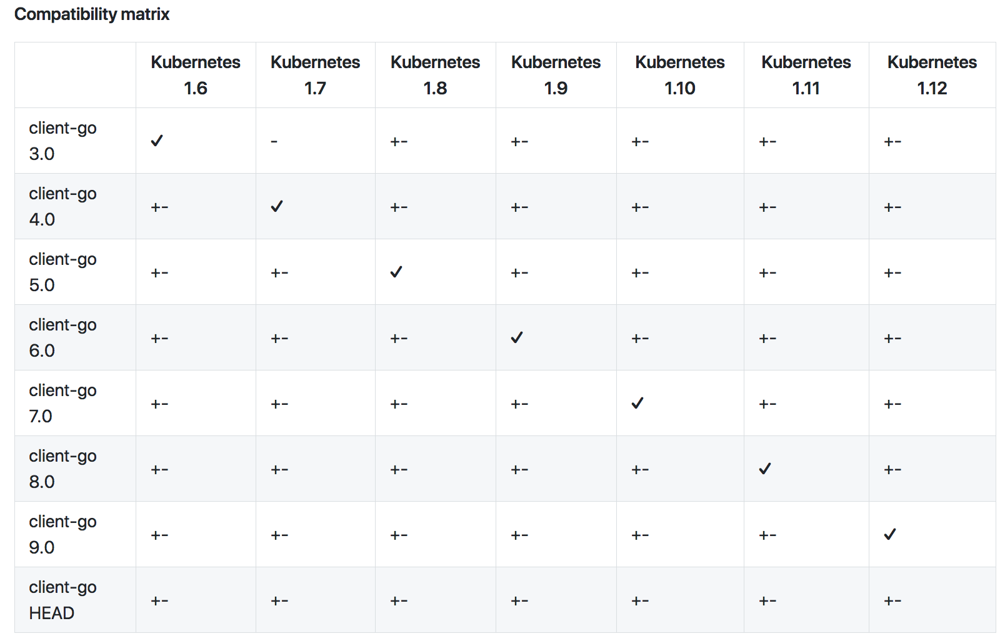

现如今kubernetes和golang的发展非常之快，Golang的依赖管理也不断的更新换代，从最初的Go dep 到现在go mod。本篇文章主要介绍如何使用go mod来管理项目依赖。
这篇文章不是 Go module 教程，网上有很多关于这个主题的资料。大家可以参考下面的：
准备
在开始之前，需要确认以下：
- Go 的版本要在1.11以上
- 在GOPATH之外，即
$GOPATH/src之外新建了一个目录作为本地的项目文件夹 - 确认
GO111MODULE=on环境变量是否正确
为此，我在GOPATH之外创建了一个目录。我将创建一个简单的PVC控制器，它可以监控所需的PVC数量。
从 Dep 工具开始(或其他工具）
对于使用client-go编写Kubernetes API工具的大多数人来说，都可能正在使用Dep来管理依赖。幸运的是，go mod工具可以从Dep（以及其他工具，如Godep,Govendor和Glide）导入依赖项配置。我的示例项目使用dep与以下Gopkg.toml：
[[constraint]]
name = "k8s.io/api"
version = "kubernetes-1.9.0"
[[constraint]]
name = "k8s.io/apimachinery"
version = "kubernetes-1.9.0"
[[constraint]]
name = "k8s.io/client-go"
version = "6.0.0"
可以看出，代码使用旧版本的client-go版本6.0.0和Kubernetes API版本1.9。
首先要做的是将项目初始化为模块。从代码的根目录，使用以下命令：
$ cd ./pvcwatch
$ go mod init github.com/vladimirvivien/pvcwatch
mod 命令将会创建一个新的文件 go.mod 并复制Dep的依赖信息。
go: creating new go.mod: module github.com/vladimirvivien/pvcwatch
go: copying requirements from Gopkg.lock
这时，可以看一下从Gopkg.toml生成的go.mod文件的内容。
module github.com/vladimirvivien/pvcwatch
require (
github.com/PuerkitoBio/purell v1.1.0
...
k8s.io/api v0.0.0-20171214033149-af4bc157c3a2
k8s.io/apimachinery v0.0.0-20171207040834-180eddb345a5
k8s.io/client-go v6.0.0+incompatible
k8s.io/kube-openapi v0.0.0-20180216212618-50ae88d24ede
)
生成的go.mod文件依然遵循Gopkg.toml版本限制.
go modwill resort to the latest version of discovered packages that do not have any version information (from Dep or otherwise). If you don’t want that, you can update or downgrade to your preferred version (discussed later).
此时，您可以像平常一样构建代码。除此之外，构建工具将显示包解析的进度：
$ go build .
go: finding github.com/golang/protobuf v1.0.0
...
go: downloading github.com/modern-go/reflect2 v0.0.0-20180228065516-1df9eeb2bb81
go: downloading github.com/modern-go/concurrent v0.0.0-20180306012644-bacd9c7ef1dd
go: downloading golang.org/x/sys v0.0.0-20180322165403-91ee8cde4354
如果解析了所有包，将构建成功，此时拥有了可以运行的二进制文件。
从无到有
假若我们此时的项目并没有依赖管理工具，这时怎么使用go mod来管理我们的依赖呢？
首先第一步，将我们的项目初始化为一个Go module：
$ go mod init github.com/vladimirvivien/pvcwatch
go: creating new go.mod: module github.com/vladimirvivien/pvcwatch
这时，生成的 go.mod 文件将会是空的，只有我们执行了Go的一些命令(比如build, get,test, 等等)之后，go.mod才会出现依赖项. 接下来, 在我们的项目文件夹下执行 build 命令。
$ cd ./pvcwatch
$ go build .
go: finding k8s.io/apimachinery/pkg/util/runtime latest
...
go: downloading golang.org/x/sys v0.0.0-20181021155630-eda9bb28ed51
go: finding golang.org/x/text/unicode latest
go: finding golang.org/x/text/secure latest
在构建过程结束时，如果没有依赖性问题，我们应该获得构建的二进制文件。在这种情况下，go mod将自动提取所有已解析包的最新版本，如更新的go.mod文件中所示：
$> cat go.mod
module github.com/vladimirvivien/pvcwatch
require (
...
k8s.io/api v0.0.0-20181018013834-843ad2d9b9ae
k8s.io/apimachinery v0.0.0-20181015213631-60666be32c5d
k8s.io/client-go v9.0.0+incompatible
)
go.mod显示正在使用client-go v9.0.0（最新的版本）（k8s.io/api和k8s.io/apimachinery尚未SemVer’d，因此使用了最新的HEAD版本）。
问题
Trouble will come when you want to adjust (upgrade/downgrade) client-go to a specific version. For instance, in the previous section, go mod selected v9.0.0 of client-go. But, let us say we want do downgrade to v7.0.0 because:
$> cd ./pvcwatch
$> go get k8s.io/client-go@v7.0.0
This, unfortunately, will create a version mismatch between client-go and its dependent packages k8s.io/api and k8s.io/apimachinery:
$> go build .
go: finding github.com/howeyc/gopass latest
go: finding k8s.io/client-go v7.0.0+incompatible
#../../pkg/apis/clientauthentication/v1alpha1/zz_generated.conversion.go:39:15: scheme.AddGeneratedConversionFuncs undefined (type *runtime.Scheme has no field or method AddGeneratedConversionFuncs)
现在，您必须手动确定您的依赖关系图。幸运的是，client-go附带了一个方便的兼容性矩阵，可以准确地告诉我们需要哪些版本（参见下图）。

根据矩阵可以看出，client-go v7.0.0与Kubernetes 1.10兼容。因此，让我们使用go get（其支持分支名称或非semver标记名称）将其他依赖组件降级到匹配版本。
降级 k8s.io/api to Kubernets-1.10:
# Downgrade with a tag name
$> go get k8s.io/api@kubernetes-1.10.9
go: finding k8s.io/api kubernetes-1.10.9
go: downloading k8s.io/api v0.0.0-20180828232432-12444147eb11
...
# equivalent to using matching branch name
$> go get k8s.io/api@release-1.10
go: finding k8s.io/api release-1.10
降级 k8s.io/apimachinery to Kubernetes-1.10
> go get k8s.io/apimachinery@release-1.10
go: finding k8s.io/apimachinery release-1.10
go: downloading k8s.io/apimachinery v0.0.0-20180619225948-e386b2658ed2
结论
Dep将`Go包管理推向了极致的高度。现在，Go模块及其与Go命令行工具的深度集成，已经将Go依赖管理做的更上一层楼了。